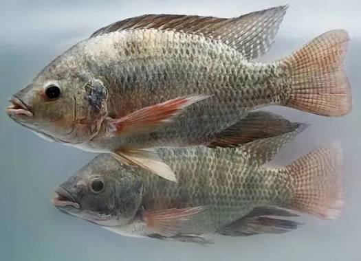
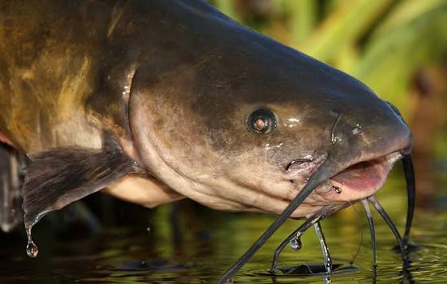
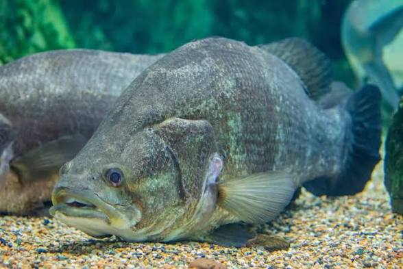

AquaHarvest is a community-based fish farming platform dedicated to educating farmers, schools, and agricultural learners on modern aquaculture techniques, sustainable fish production, and safe harvesting practices for food security and income generation.
Fish farming, also known as aquaculture, is the controlled rearing of fish in ponds, tanks, or cages. It is one of the fastest-growing agricultural sectors in the world, helping communities fight hunger, create jobs, and improve nutrition. At AquaHarvest, we train farmers on how to raise healthy fish using clean water systems, proper feeding techniques, and disease prevention methods.
Fish Harvested Annually
Farmers Trained
Active Fish Farms
Fish Products Available

High-quality tilapia raised in clean freshwater ponds. Rich in protein and ideal for grilling, frying, and commercial supply.
UGX 15,000 per KG
Naturally grown catfish with strong taste and high nutritional value. Perfect for restaurants and home consumption.
UGX 20,000 per KG
Premium Nile Perch sourced from sustainable lake farming systems. Known for its large size and export quality.
UGX 30,000 per KGBefore stocking fish, ponds must be cleaned, drained, and treated with lime to remove parasites. Clean water is then introduced and tested for oxygen levels to ensure a healthy environment.
Fish should be fed 2–3 times daily using balanced commercial feeds or locally prepared feeds. Overfeeding should be avoided to prevent water pollution.
Common fish diseases include fungal infections and bacterial rot. Regular water changes, proper feeding, and pond hygiene help prevent outbreaks.
Fish provides affordable protein for millions of families.
Creates jobs for youth, farmers, and traders in rural areas.
Fish farming is a profitable agribusiness with high demand.